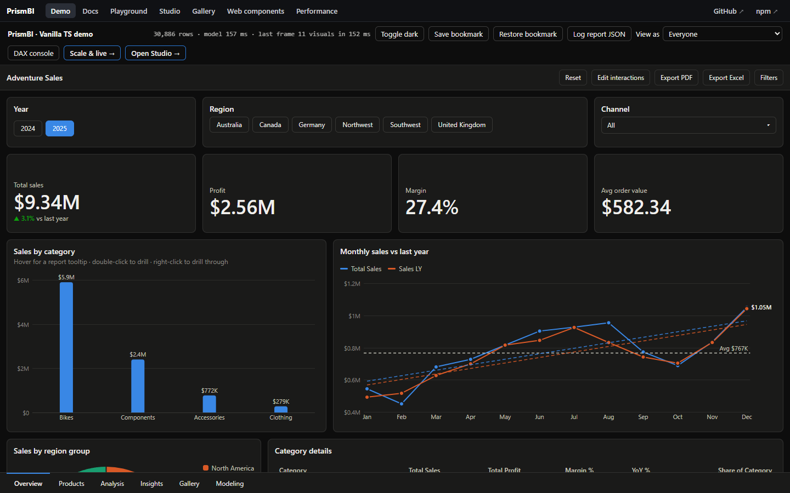
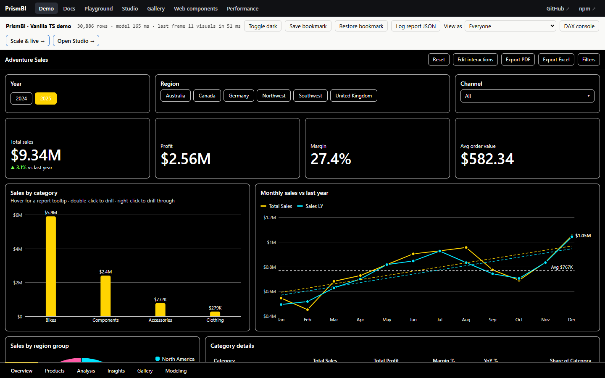

Theming and formatting
Built-in themes #
'light' (the default) and 'dark'. Both use the same eight-hue categorical palette. Each mode has its own steps, tuned to its surface, and both are validated for colour-vision-deficiency separation.

new Report(el, { model, theme: 'dark', pages });
report.setTheme('light');Custom themes #
import { createTheme, registerTheme } from '@prismbi/prismbi';
const brand = createTheme({
name: 'acme',
dataColors: ['#0057b8', '#ff8a00', '#00a88f', '#e0b100', '#c03d8a', '#4e9a06', '#6f42c1', '#d7263d'],
accent: '#0057b8',
fontFamily: '"Inter", system-ui, sans-serif',
radius: 12,
visualStyles: {
'*': { border: { show: false }, shadow: { show: true } }, // every visual
card: { title: { show: false } },
clusteredColumn: { dataLabels: { show: true } },
},
});
registerTheme(brand);
report.setTheme('acme');Theme tokens: dataColors, otherColor, background (page), surface (visuals), foreground, foregroundSecondary, foregroundMuted, gridline, axis, border, accent, good, bad, warning, neutral, sequential[], diverging[3], fontFamily, fontSize, titleFontSize, calloutFontSize, labelFontSize, radius, visualStyles.
createTheme({ mode: 'dark', ... }) starts from the dark theme.
Palette rules worth keeping: assign categorical colours in a fixed order and never cycle them. Keep good, bad and warning separate from series colours. Run your palette through a colour-vision-deficiency check before shipping it.
Power BI theme JSON #
import { fromPowerBITheme } from '@prismbi/prismbi';
report.setTheme(fromPowerBITheme(await (await fetch('/themes/corporate.json')).json()));This maps dataColors, background, foreground, tableAccent, good, bad and neutral, the divergent colours (minimum, center, maximum), and the textClasses fonts and sizes (points → px).
CSS variables #
Themes set CSS custom properties on .pbi-report, so you can override them in your own CSS:
.my-dashboard .pbi-report {
--pbi-accent: #7c3aed;
--pbi-radius: 4px;
--pbi-font: "IBM Plex Sans", sans-serif;
}
.my-dashboard .pbi-visual[data-type="card"] { --pbi-v-bg: linear-gradient(135deg, #eef2ff, #fff); }Variables: --pbi-bg, --pbi-surface, --pbi-fg, --pbi-fg-2, --pbi-fg-3, --pbi-grid, --pbi-axis, --pbi-border, --pbi-accent, --pbi-good, --pbi-bad, --pbi-warning, --pbi-font, --pbi-font-size, --pbi-title-size, --pbi-label-size, --pbi-radius, plus per-visual --pbi-v-bg, --pbi-v-bc, --pbi-v-bw, --pbi-v-radius, --pbi-v-pad.
Every element has a stable pbi-* class, and each visual container has data-type and data-visual-id attributes. Use className or style on a VisualSpec for one-off styling.
Custom tooltips #
new Report(el, {
model, pages,
tooltip: (items, title) => `<b>${title}</b><br>${items.map((i) => `${i.label}: ${i.value}`).join('<br>')}`,
});Return an HTMLElement or an HTML string, or undefined to use the default tooltip.
Format strings #
Format strings apply to columns (schema.format), measures ({ format }), fields ({ field, format }) and data labels (format.dataLabels.format).
| Pattern | 1234.5 | Notes |
|---|---|---|
#,0 | 1,235 | grouping |
#,0.00 | 1,234.50 | fixed decimals |
0.0% | — | 0.256 gives 25.6% |
$#,0 / € #,0.0 | $1,235 | literal prefix or suffix (quote other text: "units "#,0) |
#,0, | 1 | each trailing comma divides by 1,000 |
0.00E+00 | 1.23E+3 | scientific |
000 | — | 5 gives 005 |
| presets | integer, decimal, percent, currency, currencyWhole, shortDate, longDate, monthYear, year |
Display units: displayUnits: 'auto' | 'none' | 'thousands' | 'millions' | 'billions' | 'trillions' is available on value axes, data labels and cards. auto picks the unit from the magnitude and keeps about three significant digits (9.06M, 12.3K).
Dates: yyyy yy MMMM MMM MM M dddd ddd dd d HH H hh h mm ss tt q plus "literal", e.g. '"Q"q yyyy' gives Q1 2025.
Locale: output defaults to en-US, so it's identical on every machine and on the server. Set new Report(el, { locale: 'de-DE' }), or call setDefaultLocale('default') to use the browser's locale.
import { formatValue } from '@prismbi/prismbi';
formatValue(1500000, '$#,0', { displayUnits: 'auto' }); // "$1.5M"Accessibility #

-
Chart narration. Every chart gets a plain-language summary, for example: "Line chart of Total Sales by MonthYear: 24 values from Jan 2024 to Dec 2025. Highest is Dec 2025 at $1.05M, lowest is Feb 2025 at $450K. Up 113% from first to last."
-
Where it goes: the visual's
aria-description, plus a visually hidden paragraph for screen readers that don't support it. - Content: it follows the current filters and selection.
-
In code:
report.visual(id).describe()returns the text (useful for alt text and exports), andnarrate(type, result, options)builds it from any query result. -
Opting out:
format: { accessibility: { narration: false } }on a visual. - Skipped: tables, slicers and text, which screen readers already read directly.
-
Where it goes: the visual's
-
High-contrast theme.
theme: 'high-contrast'puts bright, distinct series colours, white text and strong outlines on black. -
Keyboard and structure.
- Marks are focusable, Enter selects, and tooltips follow focus.
-
Every chart has
role="img"with its title. - Every visual offers Show as table.
Localization #
Translations travel with the report definition, one entry per locale:
new Report(el, {
model,
pages,
locale: 'fr-CA', // also drives number and date formatting
translations: {
fr: {
pages: { overview: 'Aperçu' },
visuals: { cols: { title: 'Ventes par catégorie' }, note: { text: 'Bonjour' } },
fields: { 'Total Sales': 'Ventes totales', 'Product[Category]': 'Catégorie' },
},
},
});
report.setLocale('ar-EG'); // switch at runtime-
Locale matching: the exact locale is tried first, then its language (
fr-CA→fr). Anything untranslated keeps its original text. - Field names: these rename axis titles, legends, tooltips and screen-reader narration, without touching the model.
-
Direction: Arabic, Hebrew, Persian and Urdu locales switch the report to right-to-left.
direction: 'ltr' | 'rtl'forces either. -
Saving:
translationsare kept bytoJSON()andload().
Try it #
import { createVisual } from '@prismbi/prismbi';
return createVisual(el, {
model,
type: 'donut',
title: 'Sales by region group',
theme: { dataColors: ['#0f766e', '#f59e0b', '#7c3aed', '#e11d48'] },
fields: { legend: 'Region[Group]', values: 'Total Sales' },
});On the docs site (npm run docs), ▶ Run in playground opens it in an editor next to its output.